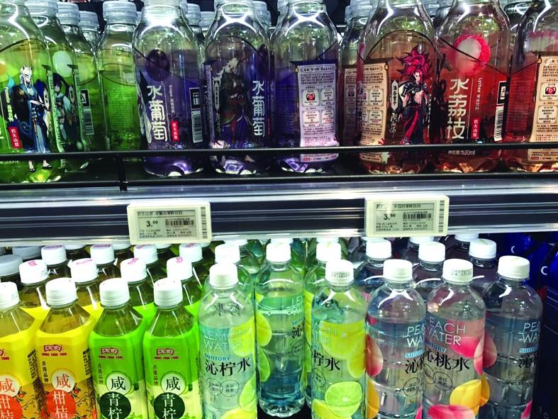

来源：消费日报 | 发布时间： 2017/8/31 9:24:21
本报记者 陈晓萌
近水饮料——或许很多人对这个概念还很陌生。但如果说“脉动”“海之言”“苏打汽水”“水溶C”“沁拧水”，包括一些乳酸菌水等，就是近水饮料，大家就会恍然大悟。
其实，近水饮料配方大都以水、维生素、微量矿物质以及一些果味添加剂为主，颜色近乎透明，但是比水更有味道，不像碳酸饮料那么“凶猛”。作为水和果汁间的过渡产品，近水饮料受到消费者欢迎。

不少消费者都注意到，今年夏天，走进任何一家超市或便利店都会发现，以往以碳酸饮料和调和果汁、茶饮料为主的饮品货架让口味清淡的近水饮料占了半壁江山，甚至有些商超饮品货架和冷柜的黄金位置都被近水饮料占据。好邻居便利店永定路店内工作人员告诉记者：“今年夏季已过半，通过统计发现，往年很受欢迎的碳酸饮料和果汁饮品明显在今年冲劲儿不足，而取代它们的则是口味清淡的饮品，有些卖得好的轻口味饮品还经常断货。另外，今年不少饮料厂家都推出了新品，消费者在选择上也不再像之前那样单一。除了老牌近水饮料‘脉动’和‘海之言’之外，农夫山泉的‘水’系列、‘水溶C’和三得利的‘沁’系列、今麦郎的芒顿小镇系列以及统一新出的乳酸菌水很受消费者欢迎。”“夏天如果不喝点饮料，感觉就缺少点什么似的，尤其是现在的一些‘轻口味’饮品，既能满足口味又能多些健康，并且有的‘轻口味’饮料还有功能性，比如说，一些苏打水还有改变人体酸碱程度的效果。今年我几乎就没喝过其他饮料，都已‘轻口味’饮料为主，也希望商家以后能推出更多品种和口味，满足大家的需求。”消费者黄莉莉对记者说。
记者调查发现，近水饮料的价格相比较于普通碳酸饮料、茶饮料和果汁饮料略高，其中乳酸菌饮料的价格最高，500毫升的价格为6.5元；其次是维生素功能饮料，600毫升的价格为5.5元。平均来看，近水饮料每500毫升的价格都在5元上下，明显高于其他饮料每500毫升3元上下。“虽说近水饮料价格贵了一些，但是感觉更健康，因为看起来几乎是透明的，肯定不像其他饮料有那么多色素和香精，并且现在种类越来越多，从苏打水到各种果味水、乳酸菌水，甚至网红饮料崂山白花蛇草水都是近水‘大家族’之一，选择上很丰富，一点都不逊色于其他饮料的种类。”消费者常山说。
饮料是否受欢迎，主要看口感如何，而近水饮料的口感多以清淡为主，让人觉得既是水又没有水那么简单，口感比水要丰富很多，还有些许甜味。消费者白先生表示，自己以前特别喜欢喝苏打水，因为有碳酸饮料的刺激，却没有碳酸饮料的热量。而且现在的苏打水，除了原味也有柠檬、香草等口味，但是味道不重，只是在回味中有一股淡淡的味道而已，尤其在夏天喝特别清爽。“我很喝喜欢近水饮料，因为它比起果汁更清爽，又不会像矿泉水一样没味，热量又不是很高，很符合我对淡口味的喜好。”消费者露露表示。消费者范先生也表示，自己生活中经常饮料“脉动”“海之言”一类带有功能性的近水饮料，这种饮料喝起来几乎没什么味道，只会比水甜一点。物美大卖场田村店内工作人员告诉记者：“口味清淡、糖分含量比较低的近水饮料，入夏以来都卖得不错，尤其是受到一些年轻女性的青睐。”
记者调查发现，除了一些品牌的乳酸菌水之外，几乎所有的近水饮料颜色都为透明色。口感相比较于果汁型饮料来说，都很清淡。比如说农夫山泉的“水柠檬”“水葡萄”等饮料，除了有一点果香之外，没有任何味道，连甜味都很淡。
不过，也有一部分消费者表示自己不是很喜欢近水饮料的口味，“我觉得近水饮料的味道有点奇怪，水不像水，果汁不像果汁，并且为了体现出果味，肯定添加了香精。为了健康我会喝水，为了口感我会直接果汁。”消费者范先生表示。
近水饮料也被称之为“轻口味”饮料，并不是某一种特定的饮料名称，而是饮料业界对这一类饮品的统称。它之所以能迅速流行，就是缘于它兼具清澈透明的外观和一定功能性的特点。
据内业人士分析，近水饮料起源于日本，在中国还处于起步状态，它是介于果汁与水之间的新品种。这种饮品大大减少了添加剂和色素的添加量，符合现阶段大众对健康的需求。近水饮料是整个饮料品类创新的方向，未来会有较好的发展前景和发展空间。
来源：《中国食品报》2023年04月03日
2023-04-03 罗晨艾媒咨询日前发布《2022—2023年全球及我国饮料市场发展趋势及消费行为数据监测报告》（以下简称《报告》）显示，随着经济发展、居民消费水平的提升及消费结构的升级，我国饮料行业整体呈现出良好的增长态势，未来产能不断扩大，产业结构将进一步得到提升和优化。2022年我国饮料市场规模达到12478.0亿元，消费者经常喝的饮料品类较多，主要有包装饮用水（62.7%）、碳酸饮料（55.0%）、奶制品（54.0%）和气泡水（42.0%）。2020年以来，因受疫情影响，全球软饮料行业的投融资数量出现短暂下滑，但随着全球经济特别是我国经济的复苏，饮料行业进入快速发展时期。
数据显示，2020年我国社会消费品零售总额下滑0.4%，这主要是因为疫情对消费造成了明显冲击。2021年社会零售总额达到440823.2亿元，同比增长12.4%，疫情之下，消费有所回暖，带动了饮料行业销售额的回温。饮料行业的产量呈现出先降后升的趋势，2020年我国饮料产量16347.3万吨，同比减少7.9%，而2021年产量有所回升，产量达到18333.8万吨。艾媒咨询分析师认为，目前饮料行业的产销量基本匹配。在疫情影响下，部分行业停产停工，饮料行业产量在一定程度上缩减。随着聚会、婚宴等逐步恢复，饮料生产企业或需加大产能。
《报告》还对消费者的购买形式进行了调研。
购买方式和渠道 调研数据显示，饮料消费者的饮料购买方式主要通过线下购买，占比67.3%，即时性需求较强。从饮料品牌知晓方式看，线下实体店的陈列就是较好的品牌传播方式（52.7%）；广告传播渠道方面，电视广告（51.9%）、短视频平台（48.0%）和线下广告（39.6%）的传播效果也比较明显。艾媒咨询分析师认为，作为日常消费频率高、即时性需求强的产品，饮料购买依然以线下为主，并且饮料产品的展示和广告传播都具有一定的推广效果。
经常选择的饮料品类 消费者经常喝的饮料品类较多，主要为包装饮用水（62.7%），碳酸饮料（55.0%），奶制品（54.0%），气泡水（42.0%）等。艾媒咨询分析师认为，由于饮料的主要成分是水，在大部分佐餐、出游的情况下，消费者选择饮品的主要目的是补充水分，且包装饮用水相较于其他饮品来说，添加剂较少，较为健康，因此在一定程度上更受消费者偏爱。
购买频次与金额 消费者购买碳酸饮料的频次主要为每周1—2次（54.5%）、每周3—4次（24.4%）；平均每月购买碳酸饮料的金额为50—100元（46.4%）、50元以下（36.5%）。相较于包装饮用水，消费者对于碳酸饮料的购买频次和金额都比较低。
最常购买的碳酸饮料品牌 调研数据显示，消费者最常购买的碳酸饮料品牌为可口可乐（67.3%），百事可乐（61.6%）和雪碧（47.6%）。艾媒咨询分析师认为，碳酸饮料已经进入产品成熟期，其品牌集中度较高。
对碳酸饮料的包装和含糖的偏好 消费者表示对碳酸饮料包装的偏好为易拉罐（74.2%）、塑料瓶（69.2%）。艾媒咨询分析师发现，由于在密封性上，玻璃瓶优于易拉罐，易拉罐优于塑料瓶，而密封性越好，碳酸化程度会越高，口感会越好，并且玻璃瓶便携性较低，这在一定程度上会增加消费者选择易拉罐的概率。同时，消费者对碳酸饮料含糖的看法主要为偏好低糖（55.7%）、偏好无糖（23.0%），可以看出少糖碳酸饮料获得了消费者的偏好。
对气泡水饮料的消费金额和可接受的单价上限 在气泡水饮料的月均消费上，接近一半的消费者花费50—100元，31.7%的消费者花费低于50元，花费超过100元的消费者占比仅为19.9%。另外，从气泡水可接受的单价上限来看，大部分（43.8%）消费者最高可接受的气泡水单价为7—10元，22.7%的消费者最高可接受的气泡水单价为11—15元。艾媒咨询分析师认为，消费者在气泡水上的消费金额反映其消费能力和消费意愿，而可接受的单价上限越高，则一定程度上说明消费者对气泡水饮料的消费信心更高，愿意为之支付更高的溢价。
消费者喜爱的气泡水饮料品牌 在所列举的“我国消费者较喜欢的气泡水饮料品牌”中，元气森林占据明显优势（73.9%）；其次为农夫山泉苏打气泡水（46.3%），也具有较高的认可度；屈臣氏苏打气泡水、喜茶喜小瓶和农夫山泉汽茶受喜爱程度较为接近。艾媒咨询分析师认为，元气森林气泡水迎合了大部分消费者的需求，通过垂直领域的发力赢得了一定市场认可度；同时，农夫山泉、喜茶等跨界企业也凭借其品牌影响力和水源优势跨界发展气泡水业务，取得不错的成绩，也一定程度上加剧了行业竞争。
对气泡水饮料含糖量的偏好 2022年我国消费者对气泡水饮料的含糖量偏好调查中，55.9%的消费者偏好多糖和低糖，超过偏好无糖的消费者占比（37.6%）。此外，44.4%的消费者表示，疫情后购买气泡水的频率、数量或种类都有所增加。艾媒咨询分析师认为，大多数人还是更喜欢有甜味的气泡水，甜味或可满足大脑对能量的需求，缓解人工作学习的压力和疲惫。同时，受疫情影响，许多人居家时间变长，气泡水作为新型的饮料品种，成为许多消费者娱乐消遣的饮品。
饮料产业规模稳定，饮料已成为重要国民消费之一饮料行业产业规模稳定。国家统计局数据显示，2021年1—12月，全国规模以上饮料制造企业产量达到18333.8万吨，同比增长12.15%，其中，12月当月饮料产量1358.8万吨，同比增长8.3%。
行业竞争激烈，同类饮品企业跨界争夺市场，但头部企业依然有竞争优势。以气泡水饮料为例，像农夫山泉、喜茶等均跨界入局气泡水饮料市场。
艾媒咨询分析师认为，农夫山泉、喜茶等凭借其品牌影响力跨界发展气泡水业务，取得不错的成绩，一定程度上加剧了气泡水饮料行业竞争。但元气森林气泡水通过垂直领域的发力赢得了一定市场认可度，占据了较大的市场份额，短期来看，客户黏性较高，具有明显优势。
健康产品引领潮流，新型饮料产品气泡水热度渐涨。疫情暴发后，人们越来越重视健康，越来越多的消费者关注饮料产品成分的来源，寻求支持免疫力、改善睡眠和减轻压力的产品。因此，饮料企业正在创新新成分，以生产具有健康功能效益的产品。比如新型饮料气泡水的出现，一定程度上提高了“健康饮料产品”的热度。
《报告》认为，未来饮料业将会得到进一步的健康发展，饮料行业需求将不断上升，产能更加扩大，产业结构将进一步得到提升和优化。